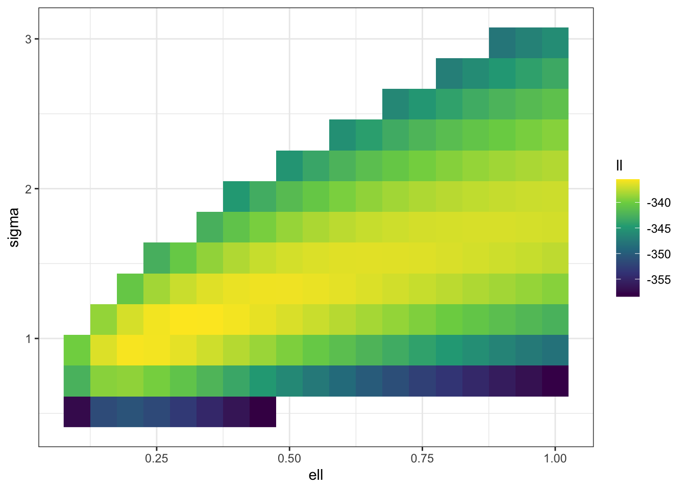

Long time readers will know that I bloody love a Gaussian process. I wrote an extremely detailed post on the various ways to define Gaussian processes. And I did not do that because I just love inflicting Hilbert spaces on people. In fact, the only reason that I ever went beyond the standard operational definition of GPs that most people live their whole lives using is that I needed to.
Twice.
The first time was when I needed to understand approximation properties of a certain class of GPs. I wrote a post about it. It’s intense1.
The second time that I really needed to dive into their arcana and apocrypha2 was when I foolishly asked the question can we compute PC priors for Gaussian processes?.
The answer was yes. But it’s a bit tricky.
So today I’m going to walk you through the ideas. There’s no real need to read the GP post before this one3, but it would be immensely useful to have at least glanced at the post on PC priors.
How do you put a prior on parameters of a Gaussian process?
We are in the situation where we have a model that looks something like this4 5 \[\begin{align*} y_i \mid \beta, u, \theta &\sim p(y_i \sim \beta, u, \phi) \\ u(\cdot) \mid \theta &\sim GP(0, c_\theta) \\ \beta, \phi &\sim p(\beta,\phi), \end{align*}\] where \(c_\theta(\cdot,\cdot)\) is a covariance function with parameters \(\theta\) and we need to specify a joint prior on the GP parameters \(\theta\).
The simplest case of this would be GP regression, but a key thing here is that, in general, the structure (or functional form) of the priors on \(\theta\) probably shouldn’t be too tightly tied to the tied to the specific likelihood. Why do I say that? Well the scaling of a GP should depend on information about the likelihood, but it’s hard to make a compelling case for the other type of information conveyed by a prior to depend on it.
Now this view is predicated on us wanting to make an informative prior. In some very special cases, people with too much time on their hands have derived reference priors for specific models involving GPs. These priors care deeply about which likelihood you use. In fact, if you use them with a different model6, you may not end up with a proper7 posterior.We will talk about those later.
To start, let’s look at the simplest way to build a PC prior. We will then talk about why this is not a good idea.
A first crack at a PC prior
As always, the best place to start is the simplest possible option. There’s always a hope8 that we won’t need to pull out the big guns.
So what is the simplest solution? Well it’s to treat a GP as just a specific multivariate Gaussian distribution \[ u \sim GP(0, \sigma^2R(\theta)), \] where \(R(\theta)\) is a correlation matrix.
The nice thing about a multivariate Gaussian is that we have a clean expression for its Kullback-Leibler divergence. Wikipedia tells us that for an \(n\)-dimensional multivariate Gaussian \[ 2\operatorname{KL}(N(0, \Sigma) || N(0, \Sigma_0)) = \operatorname{tr}\left(\Sigma_0^{-1}\Sigma\right) + \log \det \Sigma_0 - \log \det \Sigma- n. \] To build a PC prior we need to consider a base model. That’s tricky in generality, but as we’ve assumed that the covariance matrix can be decomposed into the variance \(\sigma^2\) and a correlation matrix \(R(\theta)\), we can at least specify an easy base model for \(\sigma\). As always, the simplest model is one with no GP in it, which corresponds to \(\sigma_\text{base} = 0\). From here, we can follow the usual steps to specify the PC prior \[ p(\sigma) = \lambda e^{-\lambda \sigma}, \] where we choose \(\lambda = \log(\alpha)/U\) for some upper bound \(U>0\) and some tail probaility \(0<\alpha<1\) so that \[ \Pr(\theta > U) = \alpha. \] The specific choice of \(U\) will depend on the context. For instance, if it’s logistic regression we probably want something like9 \(U=1\). If we have a GP on the log-mean of a Poisson distribution, then we probably want \(U < 21.5\) if you want the mean of the Poisson distribution to be less than the maximum integer10 in R. In most data, you’re gonna want11 \(U\ll 5\). If the GP is on the mean of a normal distribution, the choice of \(U\) will depend on the context and scaling of the data.
Without more assumptions about the form of the covariance function, it is impossible to choose a base model for the other parameters \(\theta\).
That said, there is one special case that’s important: the case where \(\sigma = \ell\) is a single parameter controlling the intrinsic length scale, that is the distance at which the correlation between two points \(\ell\) units apart is approximately zero. The larger \(\ell\) is, the more correlated observations of the GP are and, hence, the less wiggly its realisation is. On the other hand, as \(\ell \rightarrow 0\), the observations GP often behaves like realisations from an iid Gaussian and the GP becomes12 wilder and wilder.
This suggests that a good base model for the length-scale parameter would be \(\ell = \infty\). We note that if both the base model and the alternative have the same value of \(\sigma\), then it cancels out in the KL-divergence. Under this assumption, we get that \[ d(\ell \mid \sigma) = \text{``}\lim_{\ell_0\rightarrow \infty}\text{''} \sqrt{\operatorname{tr}\left(R(\ell_0)^{-1}R(\ell)\right) - \log \det R(\ell) + \log \det R(\ell_0) - n}, \] where I’m being a bit cheeky putting that limit in, as we might need to do some singular model jigery-pokery of the same type we needed to do for the standard deviation. We will formalise13 this, I promise.
As the model gets more complex as the length scale decreases, we want our prior to control the smallest value \(\ell\) can take. This suggests we want to choose \(\lambda\) to ensure \[ \Pr(\ell < L) = \alpha. \] How do we choose the lower bound \(L\)? One idea is that our prior should have very little probability of the length scale being smaller than the length-scale of the data. So we can chose \(L\) to be the smallest distance between observations (if the data is regularly spaced) or as a low quantile of the distribution of distances between nearest neighbours.
All of this will specify a PC prior for a Gaussian process. So let’s now discuss why that prior is a bit shit.
What’s bad about this?
The prior on the standard deviation is fine.
The prior on the length scale is more of an issue. There are a couple of bad things about this prior. The first one might seem innocuous at first glance. We decided to treat the GP as a multivariate Gaussian with covariance matrix \(\sigma^2 R(\theta)\). This is not a neutral choice. In order to do it, we need to commit to a certain set of observation locations14. Why? The matrix \(R(\theta)\) depends entirely on the observation locations and if we use this matrix to define the prior we are tied to those locations.
This means that if we change the amount of data in the model we will need to change the prior. This is going to play havoc15 on any sort of cross-validation! It’s worth saying that the other two sources of information (the minimum length scale and the upper bound on \(\sigma\)) are not nearly as sensitive to small changes in the data. This information is, in some sense, fundamental to the problem at hand and, therefore, much more stable ground to build your prior upon.
There’s another problem, of course: this prior is expensive to compute. The KL divergence involves computing \(\operatorname{tr}(R(\ell_0)^{-1}R(\ell))\) which costs as much as another log-density evaluation for the Gaussian process (which is to say it’s very expensive).
So this prior is going to be deeply inconvenient if we have varying amounts of data (through cross-validation or sequential data gathering). It’s also going to be wildly more computationally expensive than you expect a one-dimensional prior to be.
All in all, it seems a bit shit.
The Matérn covariance fucntion
It won’t be possible to derive a prior for a general Gaussian process, so we are going to need to make some simplifying assumptions. The assumption that we are going to make is that the covariance comes from the Whittle-Matérn16 17 class \[ c(s, s') = \sigma^2 \frac{2^{1-\nu}}{\Gamma(\nu)}\left(\sqrt{8\nu}\frac{\|s-s'\|}{\ell}\right)^\nu K_\nu\left(\sqrt{8\nu}\frac{\|s-s'\|}{\ell}\right), \] where \(\nu\) is the smoothness parameter, \(\ell\) is the length-scale parameter, \(\sigma\) is the marginal standard deviation, and \[ K_\nu(x) = \int_0^\infty e^{-x\cosh t}\cosh(\nu t)\,dt \] is the modified Bessel18 function of the second kind.
This class of covariance function is extremely important in practice. It interpolates between two of the most common covariance functions:
- when \(\nu = 1/2\), it corresponds to the exponential covariance function,
- when \(\nu = \infty\), it corresponds to the square exponential covariance.
There are years of experience suggesting that Matérn covariance functions with finite \(\nu\) perform better than the square exponential covariance.
Common practice is to fix19 the value of \(\nu\). There are a few reasons for this. One of the most compelling practical reasons is that we can’t easily evaluate its derivative, which rules out most modern optimisation and MCMC algorithms. It’s also very difficult to think about how you would set a prior on it. The techniques in this post will not help, and as far as I’ve ever been able to tell, nothing else will either. Finally, you could expect there to be horrible confounding between \(\nu\), \(\ell\), and \(\sigma\), which will make inference very hard (both numerically and morally).
It turns out that even with \(\nu\) fixed, we will run into a few problems. But to understand those, we are going to need to know a bit more about how inferring parameters in a Gaussian processes actually works.
Just for future warning, I will occasionally refer to a GP with a Matérn covariance function as a “Matérn field”20.
Asymptotics? I barely know her!
Let’s take a brief detour into classical inference for a moment and ask ourselves when can we recover the parameters of a Gaussian process? For most models we run into in statistics, the answer to that question is when we get enough data. But for Gaussian processes, the story is more complex.
First of all, there is the very real question of what we mean by getting more data. When our observations are iid, this so easy that when asked how she got more data, Kylie just said she “did it again”.
But this is more complex once data has dependence. For instance, in a multilevel model you could have the number of groups staying fixed while the number of observations in each group goes to infinity, you could have the number of observations in each group staying fixed while the number of groups go to infinity, or you could have both21 going to infinity.
For Gaussian processes it also gets quite complicated. Here is a non-exhaustive list of options:
- You observe the same realisation of the GP at an increasing number of points that eventually cover the whole of \(\mathbb{R}^d\) (this is called the increasing domain or outfill regime); or
- You observe the same realisation of the GP at an increasing number of points that stay within a fixed domain (this is called the fixed domain or infill regime); or
- You observe multiple realisations of the same GP at a finite number of points that stay in the same location (this does not have a name, in space-time it’s sometimes called monitoring data); or
- You observe multiple realisations of the same GP at a (possibly different) finite number of points that can be in different locations for different realisations; or
- You observe realisations of a process that evolves in space and time (not really a different regime so much as a different problem).
One of the truly unsettling things about Gaussian processes is that the ability to estimate the parameters depends on which of these regimes you choose!
Of course, we all know that asymptotic regimes are just polite fantasies that statisticians concoct in order to self-soothe. They are not reflections on reality. They serve approximately the same purpose22 as watching a chain of Law and Order episodes.
The real purpose of thinking about what happens when we get more data is to use it as a loose approximation of what happens with the data you have. So the real question is which regime is the most realistic for my data?.
One way you can approach this question is to ask yourself what you would do if you had the budget to get more data. My work has mostly been in spatial statistics, in which case the answer is usually23 that you would sample more points in the same area. This suggests that fixed-domain asymptotics is a good fit for my needs. I’d expect that in most GP regression cases, we’re not expecting24 that further observations would be on new parts of the covariate space, which would suggest fixed-domain asymptotics are usefulthere too.
This, it turns out, is awkward.
When is a parameter not consistently estimatable: an aside that will almost immediately become relevant
The problem with a GP with the Matérn covariance function on a fixed domain is that it’s not possible25 to estimate all of its parameters at the same time. This isn’t the case for the other asymptotic regime, but you’ve got to dance with who you came to the dance with.
To make this more concrete, we need to think about a Gaussian process as a realisation of a function rather than as a vector of observations. Why? Because under fixed-domain asymptotics we are seeing values of the function closer and cloer together until we essentailly see the entire function on that domain.
Of course, this is why I wrote a long and technical blog post on understanding Gaussian processes as random functions. But don’t worry. You don’t need to have read that part.
The key thing is that because a GP is a function, we need to think of it’s probability of being in a set \(A\) of functions. There will be a set of function \(\operatorname{supp}(u)\), which we call the support of \(u(\cdot)\) that is the smallest set such that \[ \Pr(u(\cdot) \in \operatorname{supp}(u)) = 1. \] Every GP has an associated support and, while you probably don’t think much about it, GPs are obsessed with their supports. They love them. They hug them. They share them with their friends. They keep them from their enemies. And they are one of the key things that we need to think about in order to understand why it’s hard to estimate parameters in a Matérn covariance function.
There is a key theorem that is unique26 to Gaussian processes. It’s usually phrased in terms of Gaussian measures, which are just the probability associated with a GP. For example, if \(u_1(\cdot)\) is a GP then \[ \mu_1(A) = \Pr(u_1(\cdot) \in A) \] is the corresponding Gaussian measure. We can express the support of \(u(\cdot)\) as the smallest set of functions such that \(\mu(A)=1\).
Theorem 1 (Feldman-Hájek theorem) Two Gaussian measures \(\mu_1\) and \(\mu_2\) with corresponding GPs \(u_1(\cdot)\) and \(u_2(\cdot)\) on a locally convex space27 either satisfy, for every28 set \(A\)
\[
\mu_2(A) > 0 \Rightarrow \mu_1(A) > 0 \text{ and } \mu_1(A) > 0 \Rightarrow \mu_2(A) > 0,
\] in which case we say that \(\mu_1\) and \(\mu_2\) are equivalent29 (confusingly30 written \(\mu_1 \equiv \mu_2\)) and \(\operatorname{supp}(u_1) = \operatorname{supp}(u_2)\), or \[
\mu_2(A) > 0 \Rightarrow \mu_1(A) = 0 \text{ and } \mu_1(A) > 0 \Rightarrow \mu_2(A) = 0,
\] in which case we say \(\mu_1\) and \(\mu_2\) are singular (written \(\mu_1 \perp \mu_2\)) and \(u_1(\cdot)\) and \(u_2(\cdot)\) have disjoint supports.
Later on in the post, we will see some precise conditions for when two Gaussian measures are equivalent, but for now it’s worth saying that it is a very delicate property. In fact, if \(u_2(\cdot) = \alpha u_1(\cdot)\) for any \(|\alpha|\neq 1\), then \(\mu_1 \perp \mu_2\)!
This seems like it will cause problems. And it can31. But it’s fabulous for inference.
To see this, we can use one of the implications of singularity: \(\mu_1 \perp \mu_2\) if and only if \[ \operatorname{KL}(u_1(\cdot) || u_2(\cdot)) = \infty, \] where the the Kullback-Leibler divergence can be interpreted as the expectation of the likelihood ratio of \(u_1\) vs \(u_2\) under \(u_1\). Hence, if \(u_1(\cdot)\) and \(u_2(\cdot)\) are singular, we can (on average) choose the correct one using a likelihood ratio test. This means that we will be able to correctly recover the true32 parameter.
It turns out the opposite is also true.
Theorem 2 If \(\mu_\theta\), \(\theta \in \Theta\) is a family of Gaussian measures corresponding to the GPs \(u_\theta(\cdot)\) and \(\mu_\theta \equiv \mu_{\theta'}\) for all values of \(\theta, \theta' \in \Theta\), then there is no sequence of estimators \(\hat \theta_n\) such that, for all \(\theta_0 \in \Theta\) \[ {\Pr}_{\theta_0}(\hat \theta_n \rightarrow \theta_0) = 1, \] where \({\Pr}_{\theta_0}(\cdot)\) is the probability under data drawn with true parameter \(\theta_0\). That is there is no estimator \(\hat \theta_n\) that is (strongly) consistent for all \(\theta \in \Theta\).
Click for a surprise (the proof. shit i spoiled the surprise)
Proof. We are going to do this by contradiction. So assume that there is a sequence such that \[ \Pr{_{\theta_0}}(\hat \theta_n \rightarrow \theta_0) = 1. \] For some \(\epsilon >0\), let \(A_n = \{\|\hat\theta_n - \theta_0\|>\epsilon\}\). Then we can re-state our almost sure convergence as \[ \Pr{_{\theta_0}}\left(\limsup_{n\rightarrow \infty}A_n\right) = 0, \] where the limit superior is defined33 as \[ \limsup_{n\rightarrow \infty}A_n = \bigcap_{n=1}^\infty \left(\bigcup_{m=n}^\infty A_n\right). \]
For any \(\theta' \neq \theta_0\) with \(\mu_{\theta'} \equiv \mu_{\theta_0}\), the definition of equivalent measures tells us that \[ \Pr{_{\theta'}}\left(\limsup_{n\rightarrow \infty}A_n\right) = 0 \] and therefore \[ \Pr{_{\theta'}}\left(\hat \theta_n \rightarrow \theta_0\right) = 1. \] The problem with this is that is that this data is generated using \(u_{\theta'}\), but the estimator converges to \(\theta_0\) instead of \(\theta'\). Hence, the estimator isn’t uniformly (strongly) consistent.
This seems bad but, you know, it’s a pretty strong version of convergence. And sometimes our brothers and sisters in Christ who are more theoretically minded like to give themselves a treat and consider weaker forms of convergence. It turns out that that’s a disaster too.
Theorem 3 If \(\mu_\theta\), \(\theta \in \Theta\) is a family of Gaussian measures corresponding to the GPs \(u_\theta(\cdot)\) and \(\mu_\theta \equiv \mu_{\theta'}\) for all values of \(\theta, \theta' \in \Theta\), then there is no sequence of estimators \(\hat \theta_n\) such that, for all \(\theta_0 \in \Theta\) and all \(\epsilon > 0\) \[ \lim_{n\rightarrow \infty}{\Pr}_{\theta_0}(\|\hat \theta_n - \theta_0\| > \epsilon) = 0. \] That is there is no estimator \(\hat \theta_n\) that is (weakly) consistent for all \(\theta \in \Theta\).
If you can’t tell the difference between these two theorems that’s ok. You probably weren’t trying to sublimate some childhood trauma and all of your sexual energy into maths just so you didn’t have to deal with the fact that you might be gay and you were pretty sure that wasn’t an option and anyway it’s not like it’s that important. Like whatever, you don’t need physical or emotional intimacy. You’ve got a pile of books on measure theory next to your bed. You are living your best life. Anyway. It makes almost no practical difference. BUT I WILL PROVE IT ANYWAY.
Once more, into the proof.
Proof. This proof is based on a kinda advanced fact, which involves every mathematician’s favourite question: what happens along a subsequence?
This basically says that the two modes of convergence are quite similar except convergence in probability is relaxed enough to have some34 values that aren’t doing so good at the whole converging thing.
With this in hand, let us build a contradiction. Assume that \(\hat \theta_n\) is weakly consistent for all \(\theta \in \Theta\). Then, if we generate data under \(\mu_{\theta_0}\), then we get that, along a subsequence \(n_k\) \[ \Pr{_{\theta_0}}(\hat \theta_{n_k} \rightarrow \theta_0) =1. \]
Now, if \(\hat \theta_n\) is weakly consistent for all \(\theta\), then so is \(\hat \theta_{n_k}\). Then, by our assumption, for every \(\theta' \in \Theta\) and every \(\epsilon>0\) \[ \lim_{k \rightarrow \infty} \Pr{_{\theta'}}\left(\|\hat \theta_{n_k} - \theta'\| > \epsilon\right) = 0. \]
Our probability fact tells us that there is a further infinite sub-sub-sequence \(n_{k_\ell}\) such that \[ \Pr{_{\theta'}}\left(\hat \theta_{n_{k_\ell}} \rightarrow \theta'\right) = 1. \] But Theorem 2 tells us that \(\hat \theta_{n_k}\) (and hence \(\theta_{n_{k_l}}\)) satisfies \[ \Pr{_{\theta'}}\left(\hat \theta_{n_{k_\ell}} \rightarrow \theta_0\right) = 1. \] This is a contradiction unless \(\theta'= \theta_0\), which proves the assertion.
Matérn fields under fixed domain asymptotics: the love that dares not speak its name
All of that lead up immediately becomes extremely relevant once we learn one thing about Gaussian processes with the Matérn covariance function.
Theorem 4 Let \(\mu_{\nu, \sigma, \ell}\) be the Gaussian measure corresponding to the GP with Matérn covariance function with parameters \((\nu, \sigma, \ell)\), let \(D\) be any finite domain in \(\mathbb{R}^d\), and let \(d \leq 3\). Then, restricted to \(D\), \[ \mu_{\nu,\sigma_1, \ell_1} \equiv \mu_{\nu, \sigma_2, \ell_2} \] if and only if \[ \frac{\sigma_1^2}{\ell_1^{2\nu}} = \frac{\sigma_2^2}{\ell_2^{2\nu}}. \]
I’ll go through the proof of this later, but the techniques require a lot of warm up, so let’s just deal with the consequences for now.
Basically, Theorem 4 says that we can’t consistently estimate the range and the marginal standard deviation for a one, two, or three dimensional Gaussian process. Hao Zhang noted this and that it remains true35 when dealing with non-Gaussian data.
The good news, I guess, is that in more than four36 dimensions the measures are always singular.
Now, I don’t give one single solitary shit about the existence of consistent estimators. I am doing Bayesian things and this post is supposed to be about setting prior distributions. But it is important. Let’s take a look at some simulations.
First up, let’s look at what happens in 2D when we directly (ie with no noise) observe a zero-mean GP with exponential covariance function (\(\nu = 1/2\)) at points in the unit square. In this case, the log-likelihood is, up to an additive constant, \[ \log p(y \mid \theta) = -\frac{1}{2}\log |\Sigma(\theta)| - \frac{1}{2}y^T\Sigma(\theta)^{-1}y. \]
The R code is not pretty but I’m trying to be relatively efficient with my Cholesky factors.
We can now simulate 500 data points on the unit square, compute their distances, and simulate from the GP.
With all of this in hand, let’s look at the likelihood surface along37 the line \[
\frac{\sigma^2}{\ell} = c
\] for various values of \(c\). I’m using some purrr trickery38 here to deal with the fact that sometimes the cholesky factorisation will throw an error.
m <- 100
f <- partial(log_lik, y = dat$y, h = dat$dist_mat)
pars <- \(c) tibble(ell = seq(0.05,1, length.out = m),
sigma = sqrt(c * ell), c = rep(c, m))
ll <- map_df(3:8,pars) |>
mutate(contour = factor(c),
ll = map2_dbl(sigma, ell,
possibly(f, otherwise = NA_real_)))
ll |> ggplot(aes(ell, ll, colour = contour)) +
geom_line() +
scale_color_brewer(palette = "Set1") +
theme_bw()
We can see the same thing in 2D (albeit at a lower resolution for computational reasons). I’m also not computing a bunch of values that I know will just be massively negative.
f_trim <- \(sigma, ell) ifelse(sigma^2 < 3*ell | sigma^2 > 8*ell,
NA_real_, f(sigma, ell))
m <- 50
surf <- expand_grid(ell = seq(0.05,1,length.out = m),
sigma = seq(0.1, 4, length.out = m)) |>
mutate(ll = map2_dbl(sigma, ell,
possibly(f_trim, otherwise = NA_real_)))
surf |> filter(ll > 50) |>
ggplot(aes(ell, sigma, fill = ll)) +
geom_raster() +
scale_fill_viridis_c() +
theme_bw()
Clearly there is a ridge in the likelihood surface, which suggests that our posterior is going to be driven by the prior along that ridge.
For completeness, let’s run the same experiment again when we have some known observation noise, that is \(y_i \sim N(u(s_i), 1)\). In this case, the log-likelihood is \[ \log p(y\mid \sigma, \ell) = -\frac{1}{2} \log \det(\Sigma(\theta) + I) - \frac{1}{2}y^{T}(\Sigma(\theta) + I)^{-1}y. \]
Let us do the exact same thing again!
n <- 500
dat <- tibble(s1 = runif(n), s2 = runif(n),
dist_mat = as.matrix(dist(cbind(s1,s2))),
mu = MASS::mvrnorm(mu=rep(0,n),
Sigma = cov_fun(dist_mat, 1.0, 0.2)),
y = rnorm(n, mu, 1))
log_lik <- function(sigma, ell, y, h) {
V <- cov_fun(h, sigma, ell)
R <- chol(V + diag(dim(V)[1]))
-sum(log(diag(R))) - 0.5*sum(y * backsolve(R, backsolve(R, y, transpose = TRUE)))
}
m <- 100
f <- partial(log_lik, y = dat$y, h = dat$dist_mat)
pars <- \(c) tibble(ell = seq(0.05,1, length.out = m),
sigma = sqrt(c * ell), c = rep(c, m))
ll <- map_df(seq(0.1, 10, length.out = 30),pars) |>
mutate(contour = factor(c),
ll = map2_dbl(sigma, ell,
possibly(f, otherwise = NA_real_)))
ll |> ggplot(aes(ell, ll, colour = contour)) +
geom_line(show.legend = FALSE) +
#scale_color_brewer(palette = "Set1") +
theme_bw()
f_trim <- \(sigma, ell) ifelse(sigma^2 < 0.1*ell | sigma^2 > 10*ell,
NA_real_, f(sigma, ell))
m <- 20
surf <- expand_grid(ell = seq(0.05,1,length.out = m),
sigma = seq(0.1, 4, length.out = m)) |>
mutate(ll = map2_dbl(sigma, ell,
possibly(f_trim, otherwise = NA_real_)))
surf |> filter(ll > -360) |>
ggplot(aes(ell, sigma, fill = ll)) +
geom_raster() +
scale_fill_viridis_c() +
theme_bw()
Once again, we can see that there is going to be a ridge in the likelihood surface! It’s a bit less disastrous this time, but it’s not excellent even with 500 observations (which is a decent number on a unit square). The weird structure of the prior is still going to lead to a long, non-elliptical shape in your posterior that your computational engine (and your person interpreting the results) are going to have to come to terms with.
Unless, of course, the prior can save you.
So the prior is important then! What do other people do?
That ridge in the likelihood surface does not go away in low dimensions, which essentially means that our inference along that ridge is going to be driven by the prior.
Possibly the worst choice you could make in this situation is trying to make a minimally informative prior. Of course, that’s what somebody did when they made a reference prior for the problem. In fact it was the first paper39 that looks rigorously at prior distributions on the parameters of GPs. It’s just unfortunate that it’s quite shit. It has still been cited quite a lot. And there are some technical advances to the theory of reference priors, but if you use it you just find yourself mapping out that damn ridge.
On top of being, structurally, a bad choice, the reference prior has a few other downsides:
- It is very computationally intensive and quite complex. Not unlike the bad version of the PC prior!
- It requires strong assumptions about the likelihood. The first version assumed that there was no observation noise. Later papers allowed there to be observation noise. But only if it’s Gaussian.
- It is derived under the asymptotic regime where an infinite sequence of different independent realisations of the GP are observed at the same finite set of points. This is not the most useful regime for GPs.
All in all, it’s a bit of a casserole.
From the other end, there’s a very interesting contribution from Aad van der Vaart and Harry van Zanten wrote a very lovely theoretical paper that looked at which priors on \(\ell\) could result in theoretically optimal posterior contraction rates. They argued that \(\ell^{-d}\) should have a Gamma distribution. Within the Matérn class, their results are only valid for the squared exponential contrivance function.
One of the stranger things that I have never fully understood is that the argument I’m going to make below ends up with a gamma distribution on \(\ell^{-d/2}\), which is somewhat different to van der Vaart and van Zanten. If I was to being forced to bullshit some justification I’d probably say something about the Matern process depending only on the distance between observations makes the \(d\)-sphere the natural geometry (the volume of which scales like \(\ell^{-d/2}\)) rather than the \(d\)-cube (the volume of which scales lie \(\ell^{-d}\)). But that would be total bullshit. I simply have no idea. They’re proposal comes via the time-honoured tradition of “constant chasing” in some fairly tricky proofs, so I have absolutely no intuition for it.
We also found in other contexts that use the KL divergence rather than its square root tended to perform worse. So I’m kinda happy with our scaling and their’s doesn’t cover the same case anyway.
Neither of these papers consider that ridge in the likelihood surface.
This lack of consideration—as well as their success in everything else we tried them on—was a big part of our push to make a useful version of a PC prior for Gaussian processes.
Rescuing the PC prior; or What I recommend you do
It has been a long journey, but we are finally where I wanted us to be. So let’s talk about how to fix the PC prior. In particular, I’m going to go through how to derive a prior on the length scale \(\ell\) that has a simple form.
In order to solve this problem, we are going to do three things in the rest of this post:
- Restrict our attention to the stationary40 GPs
- Restrict our attention to the Matérn class of covariance functions.
- Greatly increase our mathematical41 sophistication.
But before we do that, I’m going to walk you through the punchline.
This work was originally done with the magnificent Geir-Arne Fuglstad, the glorious Finn Lindren, and the resplendent Håvard Rue. If you want to read the original paper, the preprint is here42.
The short version is that the PC prior for the length scale in a \(d\)-dimensional space is a Fréchet distribution43 with shape parameter \(d/2\). That is, \[ p(\ell) = \frac{d\lambda_\ell}{2} \ell^{-(d/2+1)}e^{-\lambda_{\ell}\ell^{-d/2}}, \] where we choose \(\lambda_\ell = -\log(\alpha_\ell)L^{d/2}\) to ensure that \[ \Pr(\ell < L) = e^{-\lambda L^{-d/2}} < \alpha_\ell. \] In two dimensions, this is an inverse gamma prior, which gives rigorous justification to a commonly used prior in spatial statistics.
Comparing it with the reference prior
Tbh I’m not sure if this is needed. Thoughts?
Moving beyond the Matérn
This is needed. I will write it tomorrow
What’s in the rest of the post?
The remainder of this post will be devoted to deriving the PC prior. It’s going to get a bit hairy and I’m going to assume you’ve at least skimmed through the first 2 definitions in my previous post defining GPs.
The main purpose of the rest of the post is to show the types of things that you need to think about to get the relatively straighforward prior. Because if I had to suffer you all have to suffer.
An invitation to the theory of Stationary Gaussian processes
Gaussian processes with the Matérn covariance function are an excellent example of a stationary44 Gaussian process, which are characterised45 46 by have covariance functions of the form \[ c(s, s') = c(s- s'), \] where I am abusing notation and using \(c\) for both the two parameter and one parameter functions. This assumption means that the correlation structure does not depend on where you are in space, only on the distance between points.
The assumption of stationarity massively simplifies GPs. Firstly, the stationarity assumption greatly reduces the number of parameters you need to describe a GP as we don’t need to worry about location-specific parameters. Secondly, it increases the statistical power of the model. If two subsets of the domain are more than \(2\ell\) apart, they are essentially independent replicates of the GP with the same parameters. This means that if the locations \(s\) vary across a large enough area (relative to the natural length scale), we get multiple effective replicates47 from the same realisation of the process.
In practice, stationarity48 is often a good enough assumption when the mean has been modelled carefully, especially given the limitations of the data. That said, priors on non-stationary processes can be set using the PC prior methodology by using a stationary process as the base model. The supplementary material of our paper gives a simple, but useful, example of this.
Stationary covariance functions and Bochner’s theorem
The restriction to stationary processes is extremely powerful. It opens us up to using Fourier analysis as a potent tool for understanding GPs. We are going to need this to construct our KL divergence, and so with some trepidation, let’s dive into the moonee ponds of spectral representations.
The first thing that we need to do is remember what a [Fourier transform] is. A Fourier transform of a square integrable function \(\phi(s)\) is49 \[ \hat \phi(\omega) = \mathcal{F}(\phi)(\omega) =\frac{1}{(2\pi)^d}\int_{\mathbb{R}^d} e^{-i\omega^Ts}\phi(s) \,ds. \]
If you have bad memories50 of desperately trying to compute Fourier integrals in undergrad, I promise you that we are not doing that today. We are simply affirming their right to exist (and my right to look them up in a table).
The reason I care about Fourier51 transforms is that if I have a non-negative measure52 \(\nu\), I can define a function \[ c(h) = \int_{\mathbb{R}^d}e^{i\omega^Th}\,d\nu(\omega). \] If measures freak you out, you can—with some loss of generality—assume that there is a function \(f(\omega)\geq 0\) such that \[ c(h) = \int_{\mathbb{R}^d}e^{i\omega^Th}f(\omega)\,d\omega. \] We are going to call \(\nu\) the spectral measure and the corresponding \(f\), if it exists, is called the spectral density.
I put it to you that, defined this way, \(c(s,s') = c(s - s')\) is a (complex) positive definite function.
Recall53 that a function is positive definite if, for every for every \(k>0\), every \(s_1, \ldots, s_k \in \mathbb{R}^d\), and every \(a_1, \ldots, a_k \in \mathbb{C}\) \[ \sum_{i = 1}^k\sum_{j=1}^k a_i\bar{a}_j c(s_i, s_j) \geq 0, \] where \(\bar a\) is the complex conjugate of \(a\).
Using our assumption about \(c(\cdot)\) we can write the left hand side as \[\begin{align*} \sum_{i = 1}^k\sum_{j=1}^k a_i\bar{a}_j c(s_i, s_j) &= \sum_{i = 1}^k\sum_{j=1}^k a_i\bar{a}_j c(s_i- s_j) \\ &=\sum_{i = 1}^k\sum_{j=1}^k a_i\bar{a}_j \int_{\mathbb{R}^d} e^{i\omega^T(s_i-s_j}\,d\nu(\omega) \\ &=\int_{\mathbb{R}^d}\sum_{i = 1}^k\sum_{j=1}^k a_i\bar{a}_j e^{i\omega^T(s_i-s_j}\,d\nu(\omega) \\ &=\int_{\mathbb{R}^d}\left(\sum_{i = 1}^k a_i e^{i\omega^Ts_i}\right)\left(\sum_{j = 1}^k \bar{a_j} e^{-i\omega^Ts_j}\right) \,d\nu(\omega)\\ &=\int_{\mathbb{R}^d}\left(\sum_{i = 1}^k a_i e^{i\omega^Ts_i}\right)\overline{\left(\sum_{j = 1}^k a_j e^{i\omega^Ts_j}\right)} \,d\nu(\omega) \\ &=\int_{\mathbb{R}^d}\left|\sum_{i = 1}^k a_i e^{i\omega^Ts_i}\right|^2\,d\nu(\omega) \geq 0, \end{align*}\] where \(|a|^2 = a\bar{a}\).
We have shown that if \(c(s,s') = c(s-s') = \int e^{i\omega^T(s-s')}\,d \nu(\omega)\) , then it is a valid covariance function. This is true, although harder to prove, in the other direction and the result is known as Bochner’s theorem.
Theorem 5 (Bochner’s theorem) A function \(c(\cdot)\) is positive definite, ie for every \(k>0\), every \(s_1, \ldots, s_k \in \mathbb{R}^d\), and every \(a_1, \ldots, a_k \in \mathbb{C}\) \[ \sum_{i = 1}^k\sum_{j=1}^k a_i\bar{a}_j c(s_i- s_j) \geq 0, \] if and only if there is a non-negative finite measure \(\nu\) such that \[ c(h) = \int_{\mathbb{R}^d} e^{i\omega^Th}\,d\nu(\omega). \]
Just as a covariance function54 is enough to completely specify a zero-mean Gaussian process, a spectral measure is enough to completely specify a zero mean stationary Gaussian process.
Our lives are mathematically much easier when \(\nu\) represents a density \(f(\omega)\) that satisfies \[ \int_{\mathbb{R}^d}\phi(\omega)\,d\nu(\omega) = \int_{\mathbb{R}^d}\phi(\omega)f(\omega)\,d\omega. \] This function, when it exists, is precisely the Fourier transform of \(c(h)\). Unfortunately, this will not exist55 for all possible positive definite functions. But as we drift further and further down this post, we will begin to assume that we’re only dealing with cases where \(f\) exists.
The case of particular interest to us is the Matérn covariance function. The parameterisation used above is really lovely, but for mathematical convenience, we are going to set56 \(\kappa = \sqrt{8\nu}\ell^{-1}\), which has57 Fourier transform \[\begin{align*} f(\omega) &= \frac{\Gamma(\nu+d/2)\kappa^{2\nu}\sigma^2}{4^{d}\pi^{d/2}\Gamma(\nu)}\frac{1}{(\kappa^2 + \|\omega\|^2)^{\nu+d/2}}\\ &= C_\text{Matérn}(\nu,d).\kappa^{2\nu}\sigma^2 \frac{1}{(\kappa^2 + \|\omega\|^2)^{\nu+d/2}}, \end{align*}\] where \(C_\text{Matérn}(\nu,d)\) is defined implicitly above and is a constant (as we are keeping \(\nu\) fixed).
Spectral representations (and the simplest of the many many versions of a stochastic integral)
To see this, we need a tiny bit of machinery. Specifically, we need the concept of a Gaussian \(\nu\)-noise and its corresponding integral.
Definition 1 (Complex \(\nu\)-noise) A (complex) \(\nu\)-noise58 is a random measure59 \(Z_\nu(\cdot)\) such that, for every60 disjoint61 pair of sets \(A, B\) satisfies the following properties
- \(Z_\nu(A)\) has mean zero and variance \(\nu(A)\),
- If \(A\) and \(B\) are disjoint then \(Z_\nu(A\cup B) = Z_\nu(A) + Z_\nu(B)\)
- If \(A\) and \(B\) are disjoint then \(Z_\nu(A)\) and \(Z_\nu(B)\) are uncorrelated62, ie \(\mathbb{E}(Z_\nu(A) \overline{Z_\nu(B)}) = 0\).
This definition might not seem like much, but imagine a simple63 piecewise constant function \[ f(\omega) = \sum_{i=1}^{n} f_i 1_{A_i}(\omega),\quad g(\omega) = \sum_{i=1}^{n} g_i 1_{A_i}(\omega) \] where \(f_i, g_i\in \mathbb{C}\) and the sets \(A_i\) are pairwise disjoint and \(\bigcup_{i=1}^n A_i = \mathbb{R}^d\). Then we can define an integral with respect to the \(\nu\)-noise as \[ \int_{\mathbb{R}^d} f(\omega)\,dZ_\nu(\omega) = \sum_{i=1}^n f_i Z_\nu(A_i), \] which has mean \(0\) and variance \[ \mathbb{E}\left(\int_{\mathbb{R}^d} f(\omega)\,dZ_\nu(\omega)\right)^2 = \sum_{i=1}^n f_i \nu(A_i) = \int_{\mathbb{R}^d}f(\omega)\,d\nu(\omega), \] where the last equality comes from the definition of an integral of a piecewise constant function.
Moreover, we get the covariance \[\begin{align*} \mathbb{E}\left(\int_{\mathbb{R}^d} f(\omega)\,dZ_\nu(\omega)\overline{\int_{\mathbb{R}^d} g(\omega)\,dZ_\nu(\omega)}\right)^2 &= \sum_{i=1}^n \sum_{j=1}^n f_ig_j \nu(A_i \cap A_j) \\ &= \sum_{i=1}^n f_i\overline{g}_i \nu(A_i) \\ &= \int_{\mathbb{R}^d}f(\omega)\overline{g(\omega)}\,d\nu(\omega). \end{align*}\]
A nice thing is that while these piecewise constant functions are quite simple, we can approximate any64 function arbitrarily well by a simple function. This is the same fact we use to build ourselves ordinary65 integrals.
In particular, the brave and the bold among you might just say “we can take limits here and define” an integral with respect to the \(\nu\)-noise this way. And, indeed, that works. You get that. for any \(f\in L^2(\nu)\),
\[ \mathbb{E}\left(\int_{\mathbb{R}^d} f(\omega)\,d Z_\nu(\omega)\right) = 0 \] and, for any \(f,g \in L^2(\nu)\), \[ \mathbb{E}\left(\int_{\mathbb{R}^d} f(\omega)\,d Z_\nu(\omega)\overline{\int_{\mathbb{R}^d} g(\omega)\,d Z_\nu(\omega)}\right) = \int_{\mathbb{R}^d} f(\omega)\overline{g(\omega)}\,d \nu(\omega). \]
If we define \[ u(s) = \int_{\mathbb{R}^d}e^{i\omega^Ts}\,dZ_\nu(\omega), \] then it follows immediately that \(u(s)\) is mean zero and has covariance function \[ \mathbb{E}(u(s)\overline{u(s')}) = \int_{\mathbb{R}^d}e^{i\omega^T(s - s')}\, d\nu(\omega) = c(s-s'). \] That is \(\nu\) is the spectral measure associated with the correlation function.
Combining this with Bochner’s theorem, we have just proved66 the spectral representation theorem for general67 (weakly) stationary68 random fields69.
Theorem 6 (Spectral representation theorem) If \(\nu\) is a finite, non-negative measure on \(\mathbb{R}^d\) and \(W\) is a complex \(\nu\)-noise, then the complex-valued process \[ u(s) =\int_{\mathbb{R}^d}e^{i\omega^Ts}\,dZ_\nu(\omega) \] has mean zero an covariance \[ c(s,s') = \int_{\mathbb{R}^d}e^{i\omega^T(s-s')}\,d\nu(\omega) \] and is therefore weakly stationary. If \(Z_\nu(A) \sim N(0, \nu(A))\) then \(u(s)\) is a Gaussian process.
Furthermore, every mean-square continuous mean zero stationary Gaussian process with covariance function \(c(s,s')= c(s-s')\) and corresponding spectral measure \(\nu\) has an associated \(\nu\)-noise \(Z_\nu(\cdot)\) such that \[ u(s) =\int_{\mathbb{R}^d}e^{i\omega^Ts}\,dZ_\nu(\omega) \] holds in the mean-square sense for all \(s \in \mathbb{R}^d\).
\(Z_\nu(\cdot)\) is called the spectral process 70 associated with \(u(\cdot)\). When it exists, the density of \(\nu\), denoted by \(f(\omega)\), is called the spectral density or the power spectrum.
All throughout here I used complex numbers and complex Gaussian processes because, believe it or not, it makes things easier. But you will be pleased to know that \(u(\cdot)\) will be real-valued as long as the spectral density \(f(\omega)\) is symmetric around the origin. And it always is.
The Cameron-Martin71 space of a stationary Gaussian process
One particular advantage of stationary processes is that we get a straightforward characterization of the Cameron-Martin space inner product. Recall that the Cameron-Martin space (or reproducing kernel Hilbert space) associated with a Gaussian process is the72 space of all functions of the form \[ h(s) = \sum_{k=1}^K c_k c(s, s_k), \] where \(K\) is finite, \(c_k\) are real, and \(s_k\) are distinct points in \(\mathbb{R}^d\). This is the space that the posterior mean for GP regression lives in.
The inner product associated with this space can be written in terms of the spectral density \(f\) as73 \[ \langle h, h'\rangle = \int_{\mathbb{R}^d} \hat h(\omega) \overline{\hat {h'}(\omega)} \frac{1}{f(\omega)}\,d\omega. \] In particular, for a Matérn Gaussian process, the corresponding norm is \[ \| h\|_{H_u} = C_\text{Matérn}\kappa^{2\nu}\sigma^2 \int_{\mathbb{R}^d}|\hat h(\omega)|^2 (\kappa^2 + \|\omega\|^2)^{\nu+d/2}\,d\omega. \] For those of you familiar with function spaces, this is equivalent to the norm on \(H^{\nu-d/2}(\mathbb{R}^d)\). One way to interpret this is that the set of functions in the Cameron-Martin space for a Matérn GP only depends on \(\nu\), while the norm and inner product (and hence the posterior mean and all that stuff) depend on \(\nu\), \(\kappa\), and \(\sigma\). This observation is going to be important.
Another look at equivalence and singularity
It would’ve been a bit of an odd choice to spend all this time talking about spectral representations and never using them. So in this section, I’m going to cover the reason for the season: singularity or absolute continuity of Gaussian measures.
The Feldman-Hájek theorem quoted is true on quite general sets of functions. However, if we are willing to restrict ourselves to a separable74 Hilbert75 space there is a much more refined version of the theorem that we can use.
Theorem 7 (Feldman-Hájek theorem (Taylor’s76 version)) Two Gaussian measures \(\mu_1\) (mean \(m_1\), covariance operator77 \(C_1\)) and \(\mu_2\) (mean \(m_2\), covariance operator \(C_2\)) on a separable Hilbert space \(X\) are absolutely continuous if and only if
The Cameron-Martin spaces associated with \(\mu_1\) and \(\mu_2\) are the same (considered as sets of functions. They usually will not have the same inner products.),
\(m_1 - m_2\) is in the78 Cameron-Martin space, and
The operator \(T = C_1^{-1/2}C_2C_1^{-1/2} - I\) is a Hilber-Schmidt operator, that is it has a countable set of eigenvalues \(\delta_k\) and corresponding eigenfunctions \([hi_k\) that satisfy \(\delta_k > -1\) and \[ \sum_{k=1}^{\infty}\delta_k^2 < \infty. \] When these three conditions are fulfilled, the Radon-Nikodym derivative is \[ \frac{d\mu_2}{d\mu_1} = \exp\left(-\frac{1}{2}\sum_{k=1}^\infty \left(\frac{\delta_k}{1 + \delta_k}\eta_k^2 - \log(1+\delta_k)\right)\right], \] where \(\eta_k\) is an sequence of N(0,1) random variables79 80 (under \(\mu_1\)).
Otherwise, the two measures are singular.
This version of Feldman-Hájek is considerably more useful than its previous incarnation. The first condition basically says that the posterior means from the two priors will have the same smoothness and is rarely a problem. Typically the second condition is fulfilled in practice (for example, we always set the mean to zero).
The third condition is where all of the action is. This is, roughly speaking, a condition that says that \(C_1\) and \(C_2\) aren’t toooooo different. To understand this, we need to look a little at what the \(\delta_k\) values actually are. It turns out to actually be easier to ask about \(1+ \delta_k\), which are the eigenvalues of \(C_1^{-1/2}C_2 C_1^{-1/2}\). In that case, we are trying to find the orthonormal system of functions \(\phi_k\in X\) such that \[\begin{align*} C_1^{-1/2}C_2 C_1^{-1/2}\phi_k &= (1+\delta_k) \phi_k \\ C^{-1/2}C_2 \psi_k &= (1+\delta_k) C_1^{1/2}\psi_k \\ C_2\psi_k &=(1+\delta_k) C_1\psi_k, \end{align*}\] where \(\psi_k = C_1^{-1/2}\phi_k\).
Hence, we can roughly interpret the \(\delta_k\) as the eigenvalues of \[ C_1^{-1}C_2 - I. \] The Hilbert-Schmidt condition is then requiring that \(C_1^{-1}C_2\) is not infinitely far from the identity mapping.
A particularly nice version of this theorem occurs when \(C_1\) and \(C_2\) have the same eigenvectors. This is a fairly restrictive assumption, but we are going to end up using it later, so it’s worth specialising. In that case, assuming \(C_j\) has eigenvalues \(\lambda_k^{(j)}\) and correpsonding \(L^2\)-orthogonal eigenfunctions \(\phi_k(\cdot)\), we can write81 \[ [C_jh](s) = \sum_{k=1}^\infty \lambda_k^{(j)} \langle\phi_k, h\rangle \phi_k(s). \] Using the orthogonality of the eigenfunctions, we can show82 that \[ [C_j^{\beta}h](s)=\sum_{k=1}^\infty (\lambda_k^{(j)})^\beta \langle\phi_k, h\rangle \phi_k(s). \]
With a bit of effort, we can see that \[ (C_1^{-1/2}C_2C_1^{-1/2} - I)h = \sum_{k=1}^\infty \frac{\lambda_k^{(2)} - \lambda_k^{(1)}}{\lambda_k^{(1)}} \langle\phi_k, h\rangle \phi_k \] and so \[ \delta_k = \frac{\lambda_k^{(2)} - \lambda_k^{(1)}}{\lambda_k^{(1)}}. \] From that, we get83 the KL divergence \[\begin{align*} \operatorname{KL}(\mu_1 || \mu_2) &= \mathbb{E}_{\mu_1}\log\left(\frac{d\mu_2}{d\mu_2}\right) \\ &=-\frac{1}{2}\sum_{k=1}^\infty \left(\frac{\delta_k}{1 + \delta_k} - \log(1+\delta_k)\right) \\ &= \frac{1}{2}\sum_{k=1}^\infty \left[\frac{\lambda_k^{(2)}}{\lambda_k^{(1)}} -1+ \log\left(\frac{\lambda_k^{(2)}}{\lambda_k^{(1)}}\right)\right]. \end{align*}\]
Possibly unsurprisingly, this is simply the sum of the one dimensional divergences \[ \sum_{k=1}^\infty\operatorname{KL}(N(0,\lambda_k^{(1)}) || N(0,\lambda_k^{(2)})). \] It’s fun to convince yourself that that \(\sum_{k=1}^\infty \delta_k^2 < \infty\) is sufficient to ensure the sum converges.
A convenient suffient condition for absolute continuity, which turns out to be necessary for Matérn fields
Ok. So I lied. I suggested that we’d use all of that spectral stuff in the last section. And we didn’t! Because I’m dastardly. But this time I promise we will!
It turns out that even with our fancy version of Feldman-Hájek, it can be difficult84 to work out whether two Gaussian processes are singular or equivalent. One of the big challenges is that the eigenvalues and eigenfunctions depend on the domain \(D\) and so we would, in principle, have to check this quite complex condition for every single domain.
Thankfully, there is an easy to parse sufficient condition that we can use that show when two GPs are equivalent on every bounded domain. These conditions are stated in terms of the spectral densities.
Theorem 8 (Sufficent condition for equivalence (Thm 4 of Skorokhod and Yadrenko)) Let \(u_1(\cdot)\) and \(u_2(\cdot)\) be mean-zero Gaussian processes with spectral densities \(f_j(\omega)\), \(j=1,2\). Assume that \(f_1(\omega)\|\omega\|^\alpha\) is bounded away from zero and infinity for some85 \(\alpha>0\) and \[ \int_{\mathbb{R}^d}\left(\frac{f_2(\omega) - f_1(\omega)}{f_1(\omega)}\right)^2\,d\omega < \infty. \] Then the joint distributions of \(\{u_1(s): s \in D\}\) and \(\{u_2(s): s \in D\}\) are equivalent measures for every bounded region \(D\).
The proof of this is pretty nifty. Essentially it constructs the operator \(T+I\) in a sneaky86 way and then bounds its trace on rectangle containing \(D\). That upper bound is finite precisely when the above integral is finite.
Now that we have a relatively simple condition for equivalence, let’s look at Matérn fields. In particular, we will assume \(u_j(\cdot)\), \(j=1,2\) are two Matérn GPs with the same smoothness parameter \(\nu\) and other parameters87 \((\kappa_j, \sigma_j)\). \[ \int_{\mathbb{R}^d}\left(\frac{f_2(\omega) - f_1(\omega)}{f_1(\omega)}\right)^2\,d\omega = \int_{\mathbb{R}^d}\left(\frac{\kappa_2^{2\nu}\sigma_2^2(\kappa_2^2 + \|\omega\|^2)^{-\nu - d/2} }{\kappa_1^{2\nu}\sigma_1^2(\kappa_1^2 + \|\omega\|^2)^{-\nu - d/2}}-1\right)^2\,d\omega. \] We can save ourselves some trouble by considering two cases separately.
Case 1: \(\kappa_1^{2\nu}\sigma_1^2 = \kappa_2^{2\nu}\sigma_2^2\).
In this case, we can make the change to spherical coordinates via the substitution \(r = \|\omega\|\) and, again to save my poor fingers, let’s set \(\alpha = \nu + d/2\). The condition becomes \[ \int_0^\infty\left[\left(\frac{\kappa_1^2 + r^2 }{\kappa_2^2 + r^2}\right)^{\alpha}-1\right]^2r^{d-1}\,dr < \infty. \] To check that this integral is finite, first note that, near \(r=0\), the integrand is88 \(\mathcal{O}({r^{d-1}})\), so there is no problem there. Near \(r = \infty\) (aka the other place bad stuff can happen), the integrand is \[ 2\alpha(\kappa_1^2 - \kappa_2^2)^2 r^{d-5} + \mathcal{O}(r^{d-7}). \] This is integrable for large \(r\) whenever89 \(d \leq 3\). Hence, the two fields are equivalent whenever \(d\leq 3\) and \(\kappa_1^{2\nu}\sigma_1^2 = \kappa_2^{2\nu}\sigma_2^2\). It is harder, but possible to show that the fields are singular when \(d>4\). The case with \(d=4\) is boring and nobody cares.
Case 2: \(\kappa_1^{2\nu}\sigma_1^2 \neq \kappa_2^{2\nu}\sigma_2^2\).
Let’s define \(\sigma_3 = \sigma_2(\kappa_2/\kappa_1)^\nu\). Then it’s clear that \(\kappa_1^{2\nu}\sigma_3^2 = \kappa_2^{2\nu}\sigma_2^2\) and therefore the Matérn field with parameters \((\kappa_1, \sigma_3, \nu)\) is equivalent to \(u_2(\cdot)\).
We will now show that \(u_1\) and \(u_3\) are singular, which implies that \(u_1\) and \(u_2\) are singular. To do this, we just need to note that, as \(u_1\) and \(u_3\) have the same value of \(\kappa\), \[ u_3(s) = \frac{\sigma_3}{\sigma_1}u_1(s). \] We know, from the previous blog post, that \(u_3\) and \(u_1\) will be singular unless \(\sigma_1 = \sigma_3\), but this only happens when \(\kappa_1^{2\nu}\sigma_1^2 = \kappa_2^{2\nu}\sigma_2^2\), which is not true by assumption.
Hence we have proved the following Theorem due, in this form, to Zhang (2004) and Anderes (2010).
Theorem 9 (Thm 2 of Zhang (2004)) Two Gaussian process on \(\mathbb{R}^d\), \(d\leq 3\), with Matérn covariance functions with parameters \((\ell_j, \sigma_j, \nu)\), \(j=1,2\) induce equivalent Gaussian measures if and only if \[ \frac{\sigma_1^2}{\ell_1^{2\nu}} = \frac{\sigma_2^2}{\ell_2^{2\nu}}. \] When \(d > 4\), the measures are always singular (Anderes, 2010).
Deriving the PC prior
With all of that in hand, we are finally (finally!) in a position to show that, in 3 or fewer dimensions, the PC prior distance is \(d(\kappa) = \kappa^{d/2}\). After this, we can put everythign together! Hooray!
Approximating the Kullback-Leibler divergence for a Matérn random field
Now, you can find a proof of this in the appendix of our JASA paper, but to be honest it’s quite informal. But although you can sneak any old shite into JASA, this is a blog goddamnit and a blog has integrity. So let’s do a significantly more rigorous proof of our argument.
To do this, we will need to find the KL divergence between \(u_1\), with parameters \((\kappa, \tau \kappa_1^{-\nu}, \nu)\) and a base model \(u_0\) with parameters \((\kappa_0, \tau \kappa_0^{-\nu})\), where \(\kappa_0\) is some fixed, small number and \(\tau >0\) is fixed. We will actually be interested in the behaviour of the KL divergence as \(\kappa_0\) goes to zero. Why? Well we will talk about base models in the next section. And then you’ll know why. Please have some patience.
The specific choice of standard deviation in both models ensures that \(\kappa^{2\nu}\sigma^2 = \kappa_0^{2\nu}\sigma_0^2\) and so the KL divergence is finite.
In order to approximate the KL divergence, we are going to find a basis that simultaneously diagonalises both processes. In the paper, we simply declared that we could do this. And, morally, we can. But as I said a blog aims to a higher standard than mere morality. Here we strive for meaningless rigour.
To that end, we are going to spend a moment thinking about how this can be done in a way that isn’t intrinsically tied to a given domain \(D\). There may well be a lot of different ways to do this, but the most obvious one is to notice that if \(u(\cdot)\) is periodic on the cube \([-L,L]^d\) for some \(L \gg 0\), then it can be considered as a GP on a \(d\)-dimensional torus.
A nice thing about periodic GPs is that we actually know their Karhunen-Loève90 representation. In particular, if \(c_p(\cdot)\) is a stationary covariance function on a torus, then we know that it’s eigenfunctions are \[ \phi_k(s) = e^{-\frac{2\pi i}{L} k^Th}, \quad k \in \mathbb{Z}^d \] and its eigenvalues are \[ \lambda_k = \int_{\mathbb{T}^d} e^{-\frac{2\pi i}{L} k^Th} c_p(h)\,dh. \] This gives91 \[ c_p(h) = \left(\frac{2\pi}{L}\right)^d \sum_{k \in \mathbb{Z}^d}\lambda_k e^{-\frac{2\pi i}{L} k^Th}. \]
Now we have some work to do. Firstly, our process is not periodic on \(\mathbb{R}^d\). That’s a bit of a barrier. Secondly, even if it were, we don’t actually know what \(\lambda_k\) is going to be. This is probably92 an issue.
So let’s make this sucker periodic. The trick is to note that, at long enough distances, \(u(s)\) and \(u(s')\) are almost uncorrelated. In particular, if \(\|s - s'| \gg \ell\), then \(\operatorname{Cov}(u(s), u(s')) \approx 0\). This means that if we are interested in \(u(\cdot)\) on a fixed domain \(D\), then we can replace it with \(u_p(s)\) that is a GP where the covariance function \(c_p(\cdot)\) is the periodic extension of \(c(h)\) from \([-L,L]^d\) to \(\mathbb{R}^d\) (aka we just repeat it!).
This repetition won’t be noticed on \(D\) as long as \(L\) is big enough. But we can run into the small93 problem. This procedure can lead to a covariance function \(c_p(\cdot)\) that is not positive definite. Big problem.
It turns out that one way to fix this is is to use a smooth cutoff function \(\delta(h)\) that is 1 on \([-L,L]^d\) and 0 outside of \([-\gamma,\gamma]^d\), where \(L>0\) is big enough so that \(D \subset [-L, L]^d\) and \(\gamma > L\). We can then build the periodic extension of a stationary covariance function \(c(\cdot)\) as \[ c_p(h) = \sum_{k \in \mathbb{Z}^d}c(x + 2Lk)\delta(x + 2 Lk). \] It’s important94 to note that this is not the same thing as simply repeating the covariance function in a periodic manner. Near the boundaries (but outside of the domain) there will be some “wrap-around” contamination. Bachmayr, Cohen, and Migliorati show that this does not work for general stationary covariance functions, but does work under the additional condition that \(\gamma\) is big enough and there exist some \(s \geq r > d/2\) and \(0 < \underline{C} \leq \overline{C} < \infty\) such that \[ \underline{C}(1 + \|\omega\|^2)^{-s} \leq f(\omega)\leq \overline{C}(1 + \|\omega\|^2)^{-r}. \] This condition obviously holds for the Matérn covariance function and Bachmayr, Graham, Nguyen, and Scheichl95 showed that \(\gamma > A(\nu)\ell\) is sufficient to make this work.
The nice thing about this procedure is that \(c_p(s-s') = c(s-s')\) as long as \(s, s' \in D\), which means that our inference is going to be identical on our sample as it would be with the non-periodic covariance function! Splendid!
Now that we have made a valid periodic extension (and hence we know what the eigenfunctions are), we need to work out what the corresponding eigenvalues are.
We know that \[ \int_{\mathbb{R}^d} e^{-\frac{\pi i}{L}k^Th}c(h)\,dh = f\left(\frac{\pi}{L}k\right). \] But it is not clear what will happen when we take the Fourier transform of \(c_p(\cdot)\).
Thankfully, the convolution theorem is here to help us and we know that, if \(\theta(s) = 1 - \delta(s)\), then \[ \int_{\mathbb{R}^d} e^{-\frac{\pi i}{L}k^Th}(c(h) - c_p(h))\,dh = (\hat{\theta}*f)\left(\frac{\pi}{L}k\right), \] where \(*\) is the convolution operator.
In the perfect world, \((\hat{\theta}*f)(\omega)\) would be very close to zero, so we can just replace the Fourier transform of \(c_p\) with the Fourier transform of \(c\). And thank god we live in a perfect world.
The specifics here are a bit tedious96, but you can show that \((\hat{\theta}*f)(\omega) \rightarrow 0\) as \(\gamma \rightarrow \infty\). For Matérn fields, Bachmayr etc performed some heroic calculations to show that the difference is exponentially small as \(\gamma \rightarrow \infty\) and that, as long as \(\gamma > A(\nu) \ell\), everything is positive definite and lovely.
So after a bunch of effort and a bit of a literature dive, we have finally got a simultaneous eigenbasis and we can write our KL divergene as \[\begin{align*} \operatorname{KL}(u_1 || u_0) &= \frac{1}{2} \sum_{\omega \in \frac{2\pi}{L}\mathbb{Z}}\left[\frac{f_1(\omega)}{f_0(\omega)} - 1 - \log \left(\frac{f_1(\omega)}{f_0(\omega)}\right)\right] \\ &= \frac{1}{2} \sum_{\omega \in \frac{2\pi}{L}\mathbb{Z}}\left[\frac{(\kappa_0^2 + \|\omega\|^2)^\alpha}{(\kappa^2 + \|\omega\|^2)^\alpha} - 1 - \log \left(\frac{(\kappa_0^2 + \|\omega\|^2)^\alpha}{(\kappa^2 + \|\omega\|^2)^\alpha} \right)\right]. \end{align*}\] We can write this as \[ \operatorname{KL}(u_1 || u_0) =\frac{1}{2} \left(\frac{L \kappa}{2\pi}\right)^d \sum_{\omega \in \frac{2\pi}{L}\mathbb{Z}}\left(\left[\frac{(\kappa_0^2 + \|\omega\|^2)^\alpha}{(\kappa^2 + \|\omega\|^2)^\alpha} - 1 - \log \left(\frac{(\kappa_0^2 + \|\omega\|^2)^\alpha}{(\kappa^2 + \|\omega\|^2)^\alpha} \right)\right]\left(\frac{2\pi}{L \kappa}\right)^d\right). \] Then, noticing that the sum is just a trapesium rule approximation to an integrand, we get, as \(\kappa_0 \rightarrow 0\) (and hence \(L, \gamma\rightarrow \infty\)), \[ \operatorname{KL}(u_1 || u_0) = \frac{1}{2} \left(\frac{L \kappa}{2\pi}\right)^d \int_{\mathbb{R}^d}\left[\frac{((\kappa_0/\kappa)^2 + \|\omega\|^2)^\alpha}{(1 + \|\omega\|^2)^\alpha} - 1 - \log \left(\frac{((\kappa_0/\kappa)^2 + \|\omega\|^2)^\alpha}{(1 + \|\omega\|^2)^\alpha} \right)\right] + o(1). \] The integral converges whenever \(d \leq 3\).
This suggests that we can rescale the distance by absorbing the \((L/(2\pi^d))\) into the constant in the PC prior, and get \[ d(\kappa) = \kappa^{d/2}. \]
The PC prior for \((\sigma, \ell)\)
Here goes the PC prior scaling stuff and justification of the base model.
Footnotes
The most common feedback was “I hung in for as long as I could”.↩︎
If you don’t think we’re gonna get our Maccabees on you’re dreamin’. Hell, I might have to post Enoch-ussy on main.↩︎
you might just need to trust me at some points↩︎
It could be easily more complex with multilevel component, multiple GPs, time series components etc etc. But the simplest example is a GP regression.↩︎
The GP has mean zero for the same reason we usually centre our covariates: it lets the intercept model the overall mean.↩︎
Not just the likelihood but also everything else in the model↩︎
A challenge with reference priors is that they are often improper (aka they don’t integrate to 1). This causes some conceptual difficulties, but there is a whole theory of Bayes that’s mostly fine with this as long as the resulting posterior integrates to one. But this is by no means guaranteed and is typically only checked in very specific cases. Jim Berger, one of the bigger proponents of reference prior, used to bring his wife to conference poster sessions. When she got bored, she would simply find a grad student and ask them if they’d checked if the posterior was proper. Sometimes you need to make your own fun.↩︎
Hope has no place in statistics.↩︎
Remember that any number on the logit scale outside of \([-3,3]\) might as well be the same number↩︎
log(.Machine$integer.max) = 21.48756↩︎\(e^5 \approx 148\), so 70% of the prior mass is less than that. 90% of the prior mass is less than \(e^{10} \approx 22026\) and 99% is less than \(10^{13}\). This is still a weak prior.↩︎
Conceptually. The mathematics of what happens as \(\ell \rightarrow 0\) aren’t really worth focusing on.↩︎
It’s going to turn out that we don’t have to do anything weird, but I don’t want to discount the posibility.↩︎
Or, you know, linear functionals↩︎
You can find Bayesians who say that they don’t care if cross validation works or not. You can find Bayesians who will say just about anything.↩︎
There are lots of parameterisations, but they’re all easy to move between. Compared to wikipedia, we use the \(\sqrt{8}\) scaling rather than the \(\sqrt{2}\) scaling.↩︎
Everything in this post can be easily generalised to having different length scales on each dimension.↩︎
If you’ve not run into these before, \(x^{\nu}K_\nu(x)\) is finite at zero and decreases monotonically in an exponential-ish fashion as \(x\rightarrow \infty\).↩︎
Possibly trying several values and either selecting the best or stacking all of the models↩︎
Field because by rights GPs with multidimensional parameter spaces should be called Gaussian Fields but we can’t have nice things so whatever. Live your lives.↩︎
At which point you need to ask yourself if one goes their faster. It’s chaos.↩︎
Asymptotics as copaganda.↩︎
I mean, if you can repeat experiments that’s obviously amazing, but there are lots of situations where that is either not possible or not the greatest use of resources. There’s an interesting subfield of statistical earth sciences that focuses on working out the value of getting new types of observations in spatial data. This particular variant of the value of information problem throws up some fun corners.↩︎
or hoping↩︎
in 3 or fewer dimensions↩︎
I have not fact checked this↩︎
Basically everything you care about. Feel free to google the technical definition. But any space with a metric is locally convex. Lots of things that aren’t metric spaces are too.↩︎
measurable↩︎
This will seem a bit weird if it’s the first time you’ve seen the concept. In finite dimensions (aka most of statistics) every Gaussian is equivalent to every other Gaussian. In fact, it’s equivalent to every other continuous distribution with non-zero density on the whole of \(\mathbb{R}^d\). But shit gets weird when you’re dealing with functions and we just need to take a hit of the video head cleaner and breathe until we get used to it.↩︎
These measures are not the same. They just happen to be non-zero on the same sets.↩︎
eg, computationally where Metropolis-Hastings acceptance probabilities have an annoying tendency to go to zero unless you are extraordinarily careful.↩︎
if it exists↩︎
This can be interpreted as the event that \(|\hat\theta_n - \theta_0| > 0\) infinity many times which would strongly suggest that it’s not bloody converging.↩︎
or even many↩︎
Technically, a recent paper in JRSSSB said that if you add an iid Gaussian process you will get identifiability, but that’s maybe not the most realistic asymptotic approximation.↩︎
The fourth dimension is where mathematicians go to die↩︎
It’s computationally pretty expensive to plot the whole likelihood surface, so I’m just doing it along lines↩︎
partialfreezes a few parameter values, andpossiblyreplaces any calls that return an error with an NA↩︎That I could find↩︎
Saddle up for some spectral theory.↩︎
I’m terribly sorry.↩︎
I’m moderately sure that the preprint is pretty similar to the published version but I am not going to check.↩︎
With this parameterisation it’s sometimes known as a Type-II Gumbel distribution. Because why not.↩︎
In fact, it’s isotropic, which is a stricter condition on most spaces. But there’s no real reason to specialise to isotropic processes so we simply won’t.↩︎
We are assuming that the mean is zero, but absent that assumption, we need to assume that the mean is constant.↩︎
For non-Gaussian processes, this property is known as second-order stationarity. For GPs this corresponds to stong stationary, which is a property of the distribution rather than the covariance functio ↩︎
If you’ve been exposed to the concept of ergodicity of random fields you may be eligible for compensation.↩︎
Possibly with varying length scales or some other form of anisotropy↩︎
This is normalisation is to make my life easier.↩︎
Let’s not lie, I just jumped straight to complex numbers. Some of you are having flashbacks.↩︎
Fourier-Stieljes↩︎
countably additive set-valued function. Like a probability but it doesn’t have to total to one↩︎
and complexify↩︎
or a Cameron-Martin space↩︎
That is, this measure bullshit isn’t just me pretending to be smart. It’s necessary.↩︎
Feeling annoyed by a reparameterisation this late in the blog post? Well tough. I’ve got to type this shit out and if I had to track all of those \(\sqrt{8\nu}\)s I would simply curl up and die.↩︎
In my whole damn life I have never successfully got the constant correct, so maybe check that yourself. But truly it does not matter. All that matters for the purposes of this post is the density as a function of \((\omega, \sigma,\kappa)\).↩︎
This is not restricted to being Gaussian, but for all intents and porpoises it is.↩︎
Countably additive set-valued function taking any value in \(\mathbb{C}\)↩︎
\(\nu\)-measurable↩︎
\(A \cap B = \emptyset\)↩︎
If \(Z_\nu(A)\) is also Gaussian then this is the same as them being independent↩︎
This is the technical term for this type of function because mathematicians weren’t hugged enough as children.↩︎
for a particular value of “any”↩︎
for a particular value of “ordinary”↩︎
Well enough for a statistician anyway. You can look it up the details but if you desperately need to formalise it, you build an isomorphism between \(\operatorname{span}\{u(s), s \in \mathbb{R}^d\}\) and \(\operatorname{span}\{e^{i\omega^Ts}, s \in \mathbb{R}^d\}\) and use that to construct \(W\). It’s not wildly difficult but it’s also not actually interesting except for mathturbatory reasons.↩︎
Non-Gaussian!↩︎
On more spaces, the same construction still works. Just use whatever Fourier transform you have available.↩︎
or stochastic processes↩︎
Yes, it’s a stochastic process over some \(\sigma\)-algebra of sets in my definition. Sometimes people use \[ \tilde{Z}_\nu(s) = Z_\nu((-\infty, s_1]\times\cdots \times (-\infty, s_d]) \] as the spectral process and interpret the integrals as Lebesgue-Stieltjes integrals. All power to them! So cute! It makes literally no difference and truly I do not think it makes anything easier. By the time you’re like “you know what, I reckon Stieltjes integrals are the way to go” you’ve left “easier” a few miles back. You’ve still got to come up with an appropriate concept of an integral.↩︎
Also known as the Reproducing Kernel Hilbert Space even though it doesn’t actually have to be one. This is the space of all means. See the previous GP blog.↩︎
closure of the↩︎
In the previous post, I wrote this in terms of the inverse of the covariance operator. For a stationary operator, the covariance operator is (by the convolution theorem) \[ Ch(s) = \int_{\mathbb{R}}e^{i\omega s}\hat{h}(\omega) f(\omega)\,d\omega \] and it should be pretty easy to convince yourself that \[ C^{-1}h(s) = \int_{\mathbb{R}}e^{i\omega s}\hat{h}(\omega) \frac{1}{f(\omega)}\,d\omega. \]↩︎
ie one where we can represent functions using a Fourier series rather than a Fourier transform↩︎
ie one with an inner product↩︎
Bogachev’s Gaussian Measures book, Corollary 6.4.11 with some interpretation work to make it slightly more human-readable. I also added the minus sign he missed in the density.↩︎
Recall that this is the integral operator \(C_1 f = \int_D c_1(x,x')f(x')\,d x'\).↩︎
Because of condition 1 if it’s in one of them it’s in the other too!↩︎
Technically, they are an orthonormal basis in the closure of \(\{\ell -\mu(\ell) : \ell \in X^* \}\) under the \(R_{u_1}\) norm, but let’s just be friendly to ourselves and pretend \(u_j\) have zero mean so these spaces are the same. The theorem is very explicit about what they are. If \(\phi_k\) are the (\(X\)-orthonormal) eigenfunctions corresponding to \(\delta_k\), then \[ \eta_k = \int_\mathbb{R}^d C_1^{1/2}\phi_k(s)\,dW_1(s), \] where \(W_1(s)\) is the spectral process associated with \(u_1\). Give or take, this the same thing I said in the main text.↩︎
After reading all of that, let me tell you that it simply does not matter even a little bit.↩︎
Yes - this is Mercer’s theorem again. The only difference is that we are assuming that the eigenfunctions are the same for each \(j\) so they don’t need an index.↩︎
\[\begin{align*} C_j^\beta[C_j^{-\beta}h] &= \sum_{m=1}^\infty (\lambda_m^{(j)})^\beta \left\langle\phi_m, \sum_{k=1}^\infty (\lambda_k^{(j)})^{-\beta} \langle\phi_k, h\rangle \phi_k\right\rangle \phi_m \\ &= \sum_{m=1}^\infty (\lambda_m^{(j)})^\beta\sum_{k=1}^\infty (\lambda_k^{(j)})^{-\beta} \langle\phi_k, h\rangle \left\langle\phi_m, \phi_k\right\rangle \phi_m \\ &=\sum_{m=1}^\infty (\lambda_m^{(j)})^\beta (\lambda_m^{(j)})^{-\beta} \langle\phi_m, h\rangle \phi_m \\ &= h \end{align*}\]↩︎
You simply cannot make me care enough to prove that we can swap summation and expectation. Of course we bloody can. Also \(\mathbb{E}_{\mu_1} \eta_k^2 = 1\).↩︎
But not impossible. Kristin Kirchner and David Bolin have done some very nice work on this recently.↩︎
This is a stronger condition than the one in the paper, but it’s a) readily verifiable and b) domain independent.↩︎
This is legitimately quite hard to parse. You’ve got to back-transform their orthogonal basis \(g_k\) to an orthogonal basis on \(L^2(D)\), which is where those inverse square roots come from!↩︎
Remember \(\kappa = \sqrt{8\nu}\ell^{-1}\) because Daddy hates typing.↩︎
Through the magical power of WolframAlpha or, you know, my own ability to do simple Taylor expansions.↩︎
\(d-5<-1\)↩︎
The other KL. The spicy, secret KL. KL after dark. What Loève but a second-hand Karhunen?↩︎
Specifically, this kinda funky set of normalisation choices that statisticians love to make gives↩︎
We will see that this is not an issue, but you better bloody believe that our JASA paper just breezed the fuck past these issues. Proof by citations that didn’t actually say what we needed them to say but were close enough for government work. Again, this is one of those situations where the thing we are doing is obviously valid, but the specifics (which are unimportant for our situation because we are going to send \(\kappa_0\rightarrow 0\) and \(L \rightarrow \infty\) in a way that’s much faster than \(\kappa_0^{-1}\)) are tedious and, I cannot stress this enough, completely unimportant in this context. But it’s a fucking blog and a blog has fucking integrity that the Journal of the American Fucking Statistical Association does not even almost claim to have. I’ve had some red wine.↩︎
big↩︎
I cannot stress enough that we’re not bloody implementing this scheme, so it’s not even slightly important. Scan on, McDuff.↩︎
Fun fact. I worked in the same department as authors 2 and 4 for a while and they are both very lovely.↩︎
Check out either of the Bachmayr et al. papers if you’re interested.↩︎
Reuse
Citation
@online{simpson2022,
author = {Dan Simpson},
editor = {},
title = {Priors for the Parameters in a {Gaussian} Process},
date = {2022-09-22},
url = {https://dansblog.netlify.app/2022-09-07-priors5/2022-09-07-priors5.html},
langid = {en}
}